Una plataforma de competición desarrollada para combinar respuesta rápida, sensado preciso, tracción independiente y succión activa en un diseño compacto.

Rápido. Preciso. Pegado a la pista.
Deimonyag nace alrededor de una ESP32-C3, una barra curva de 12 sensores QRE1113GR, dos motores ProFast con control independiente y una EDF27 destinada a aumentar la carga normal disponible sobre la pista.

Doce sensores. Una lectura compacta.
La barra utiliza 12 QRE1113GR distribuidos sobre una geometría curva. Un CD74HC4067 concentra todas las lecturas analógicas en un único ADC de la ESP32-C3.
Dos motores. Control independiente.
Dos JSumo ProFast de 12 V y 3600 RPM son comandados mediante drivers IFX9201SG. Cada lado dispone de PWM y dirección propios para realizar el control diferencial del seguidor.
Más carga normal sin sumar masa.
La EDF27 genera una depresión bajo el robot. El objetivo es aumentar la fuerza normal efectiva sobre la pista y, con ella, la adherencia disponible en aceleración y en curva.
ESP32-C3 Super Mini
La misma controladora se encarga del sensado, la lógica de carrera, PWM de ambos motores, señal del ESC, MicroStart, estrategia y futuras funciones de telemetría.
Main Board y barra de sensores
Los dos esquemáticos se pueden explorar desde un visor dedicado con zoom y desplazamiento sin salir de la web.